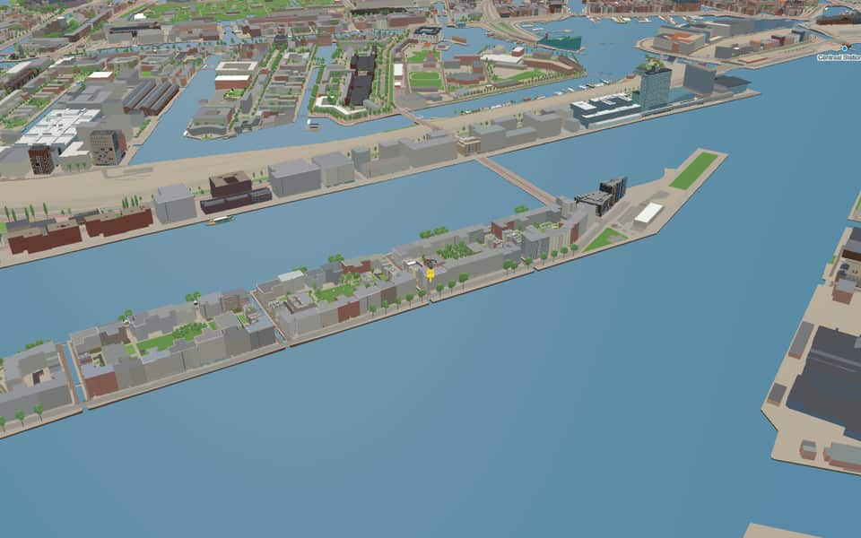
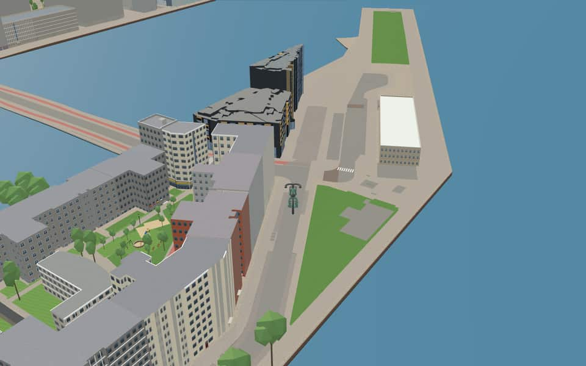
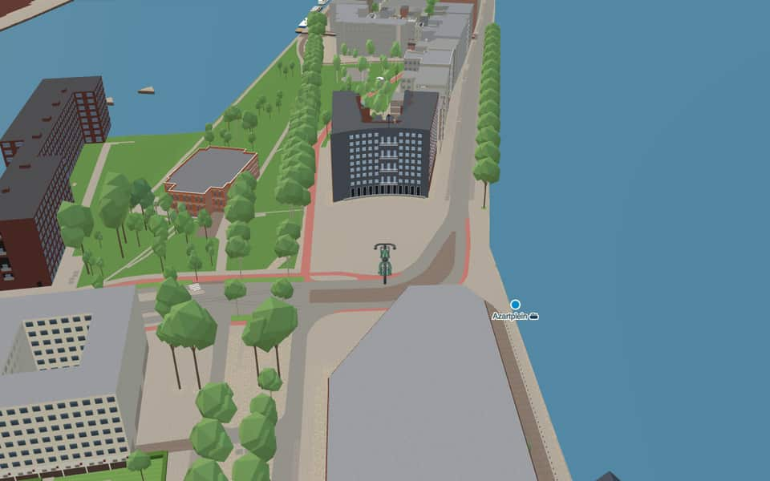
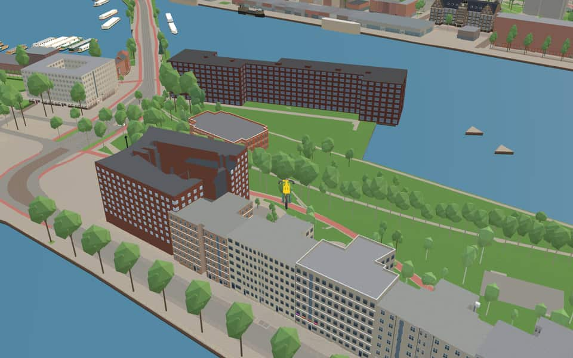

Neighbourhood in Oostelijk Havengebied
Java-eiland
Java-eiland (literally, "Java Island") is a neighbourhood of Amsterdam, Netherlands. It is located on a peninsula, surrounded on three sides by water and on the east by the KNSM Island neighbourhood. en.wikipedia.org
The name. Java-eiland means 'Java Island'. The Stoomvaart Maatschappij Nederland, based here, ran services to the Dutch East Indies, particularly Java; the name was given when the area was designated for housing in the 1990s. en.wikipedia.org


In the game
Frames from a ride through Java-eiland.




6 more photos of Java-eiland


.JPG){kind=link}

.jpg){kind=link}

.JPG){kind=link}

.jpg){kind=link}
Built here
Buildings modelled one by one for the ride.
Hotel Jakarta
Woongebouw Wladiwostok
Bogortuin 101
Did you know
Trivia the ride can show you here.
- Four small canals cross the island, lined with post-modern canal houses and spanned by bridges by Guy Rombouts and Monica Droste. Wikipedia
- In the 1980s squatters, artists and the homeless took over many of the island's buildings. Wikipedia
- Sjoerd Soeters designed the whole neighbourhood around canals such as the Brantasgracht. Wikipedia (translated from Dutch)
- The Majanggracht, named on 23 March 1994 while still on the drawing board, honours the Majang river on Java. Wikipedia (translated from Dutch)
- BrantasgrachtThe name Brantasgracht honors the Indonesian river Brantas on Java. nl.wikipedia.org
- BrantasgrachtSjoerd Soeters designed the entire neighborhood surrounding this canal. nl.wikipedia.org
- BrantasgrachtHouse numbers run from one to twenty-one, yet number twenty is completely missing. nl.wikipedia.org
- BrantasgrachtThe corner complex at Brantasgracht three to five was designed by the firm Cruz y Ortiz. nl.wikipedia.org
- IJThe largest part of the IJ was reclaimed between 1865 and 1876 to create new polders. en.wikipedia.org
- IJThe Buiten-IJ hosted mixed dinghy sailing events during the 1928 Summer Olympics in Amsterdam. en.wikipedia.org
- IJOranjesluizen locks divide the waterway into an inner section and an outer extension. en.wikipedia.org
- IJThe western part connects directly to the North Sea Canal while the eastern side extends the IJmeer. en.wikipedia.org
- IJhavenThe IJhaven was created in 1904 when the western IJkade was lengthened to form a new peninsula. en.wikipedia.org
- IJhavenLate nineteenth-century construction replaced old quays to boost trade with the Dutch East Indies. en.wikipedia.org
6 more facts
- IJhavenEarly 2000s redevelopment transformed former industrial zones into homes for 17,000 residents. en.wikipedia.org
- LamonggrachtConstruction occurred in the late 1990s as a shipyard transformed into a residential zone. nl.wikipedia.org
- LamonggrachtArchitects mimicked centuries-old canal belt styles when designing these buildings around 1995. nl.wikipedia.org
- MajanggrachtHouses twelve and fifteen share identical veranda crosses, yet their placement prevents a perfect mirror image. nl.wikipedia.org
- SeranggrachtThe canal was excavated in the late 1990s after the island of Java shifted from a shipyard to housing. nl.wikipedia.org
- SeranggrachtOdd-numbered houses stop at number 19, even though the full range of house numbers extends to 58. nl.wikipedia.org
Names on the map
Where the canal, bridge and street names come from.
Canals and water
- BrantasgrachtA river in Indonesia, in East Java, 257 km long.
- IJhavenThe IJ was once an arm of the Zuiderzee. In 1865-1872 it was reclaimed when the Noordzeekanaal was built, and in 1872 it was closed off from the Zuiderzee by the IJdijk and the Oranjesluizen.
- LamonggrachtA river on the Indonesian island of Java.
- MajanggrachtA river on the Indonesian island of Java.
- SeranggrachtA river on the Indonesian island of Java.
1 other canal without a recorded story
IJ
Bridges
- BrantasbrugBridge 1993: a bridge for road traffic, dated 1995 in the city's bridge register.
- SocietybrugBridge 1991: a bridge for cyclists, dated 1998 in the city's bridge register.
Streets
- AzartpleinSince 1992 this has been the unofficial name of the spot on the island where the first new residents of the area got to know the boat dwellers and artists who were already living there. 'Azart' is Russian for inspiration.
- BogortuinThe Indonesian city of Bogor, formerly Buitenzorg, lies sixty kilometres south of Jakarta and is famous above all for its botanical garden. The garden, laid out in 1817, contains many thousands of species of tropical plants from all over the world.
- BrantasgrachtA river in Indonesia, in East Java, 257 km long.
- ImogirituinThe Indonesian town of Imogiri, on a hill seventeen kilometres south-east of Yogyakarta. The town is famous for its seventeenth-century royal cemetery. In 1646 Sultan Agung was the first to be buried there.
- Jan SchaeferbrugJohannes Lodewijk Nicolaas Schaefer (1940-1994), politician for the Labour Party (PvdA). He sat in the House of Representatives from 1971, was state secretary for urban renewal at the Ministry of Housing and Spatial Planning in the Den Uyl cabinet from 1973 to 1977, and alderman in Amsterdam from 1978 to 1986 (housing, urban renewal, building control, land company). His are the winged words 'In gelul kan je niet wonen' (you can't live in hot air). He gave an enormous boost to urban renewal and housebuilding in Amsterdam.
- JavakadeThe island (Java), one of the Greater Sunda Islands (Indonesia). For many years the premises of the Stoomvaart Maatschappij Nederland stood on this quay; the company handled a large share of shipping to the former Dutch East Indies.
- KNSM-laanThe Koninklijke Nederlandsche Stoomboot-Maatschappij (Royal Netherlands Steamship Company), founded in 1856 and one of the largest Dutch shipping companies. It ran scheduled services to the West Indies, Central America, the west and north coasts of South America, the Levant and European ports, and also sailed between North and South America. In 1981 the KNSM was absorbed into the Koninklijke Nedlloyd group.
- KratontuinAfter the fortified, walled palace of Javanese rulers, the centre of political power and culture, which often formed a city within a city. Each dynasty founded a new kraton, where sometimes several thousand people lived. The most famous kraton on Java is that of Yogyakarta, founded in 1757.
- LamonggrachtA river on the Indonesian island of Java.
- LevantkadeAfter the region of the Levant (the coasts of Asia Minor, Syria, Egypt, Lebanon and Israel), to which the former KNSM ran a scheduled service.
- MajanggrachtA river on the Indonesian island of Java.
- SeranggrachtA river on the Indonesian island of Java.
5 more streets with a story
- SumatrakadeAn island in Indonesia.
- Taman SapituinTaman Sari means flower garden in Indonesian.
- TosaristraatA mountain village and plain in East Java, the highest settlement on the island and one of the most popular holiday resorts under Dutch rule.
- TosarituinA mountain village and plain in East Java, the highest settlement on the island and one of the most popular holiday resorts under Dutch rule.
- VerbindingsdamA dam in the Ertshaven.
8 other streets without a recorded story
Brantasbrug · Consiencebrug · Enseignementbrug · Kunstbrug · Lamongbrug · Majangbrug · Serangbrug · Societybrug